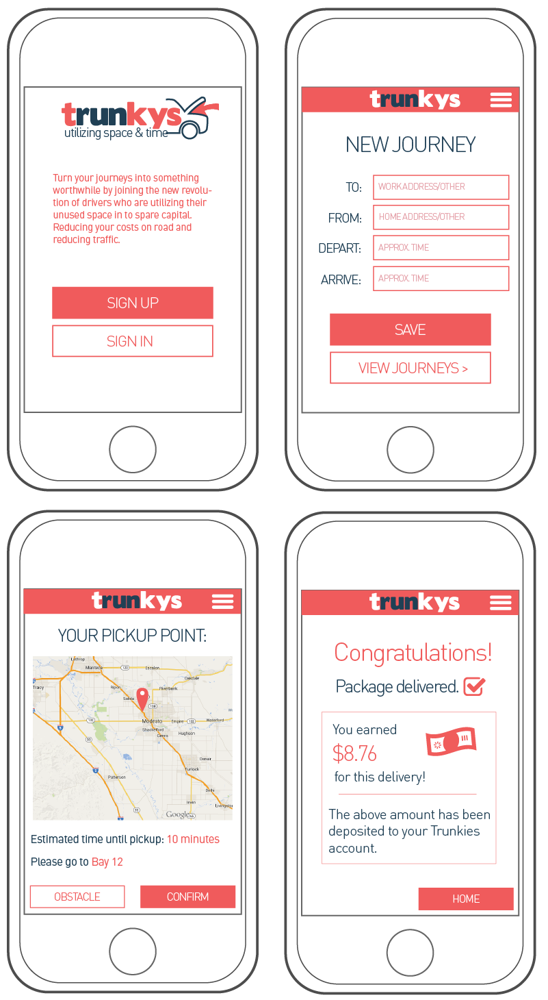

Trunkys
While interning at Plugmedia, I had the opportunity to do some graphic work for mobile app startup, Trunkys. The concept of Trunkys is to match commuters with delivery companies, enabling them to earn money by carrying out deliveries on their route to/from work.
My Ambition
To create a fun, inviting image for Trunkys. I aimed for something both descriptive and recognisable for the logo, and a clean, easy to use user interface for the app itself.
When asked to create a series of illustrations demonstrating the app in use, I wanted to make something light-hearted and vibrant.
My Roles
- Graphic Design
- UI Design
- Logo Design
- Branding
Technologies Used
- Adobe Illustrator
